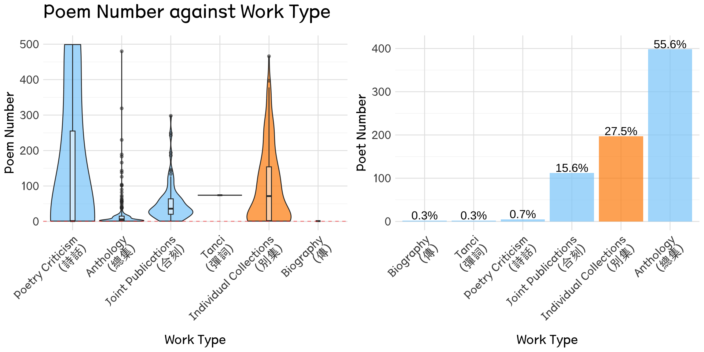
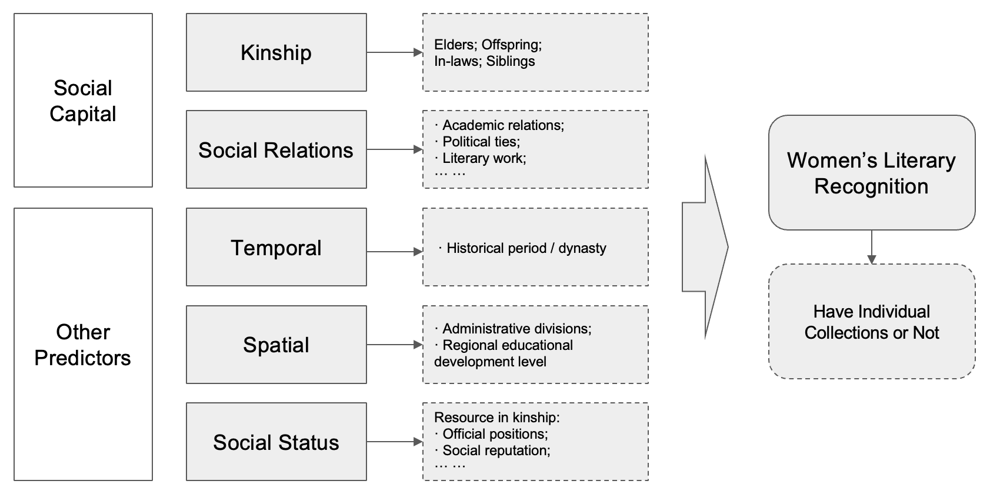
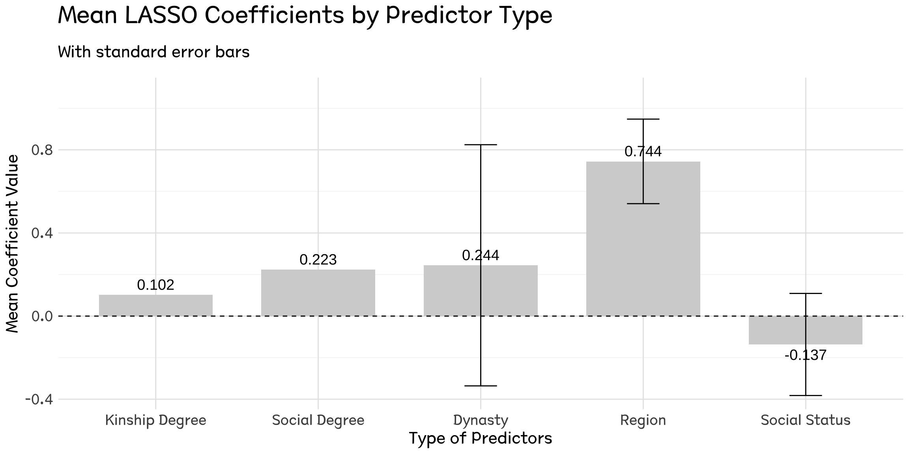
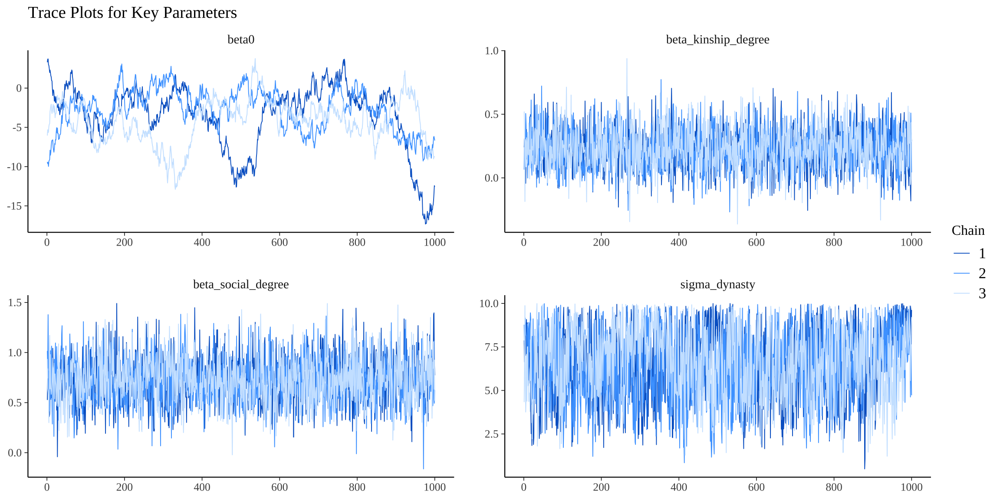
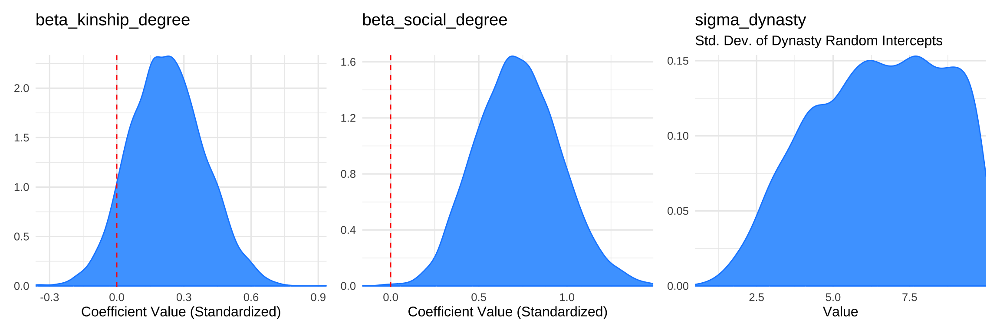
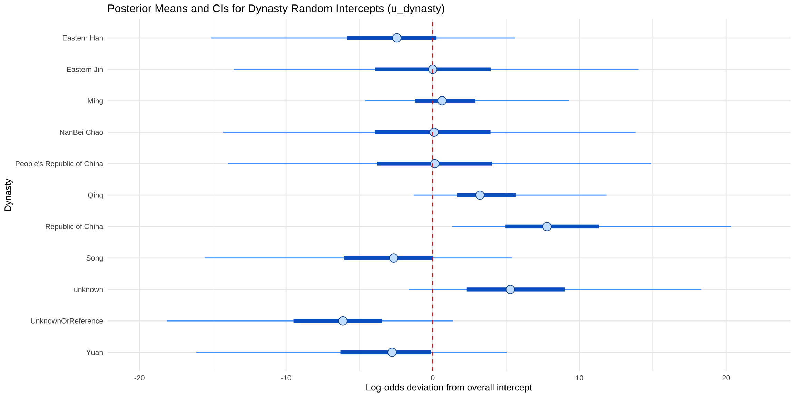
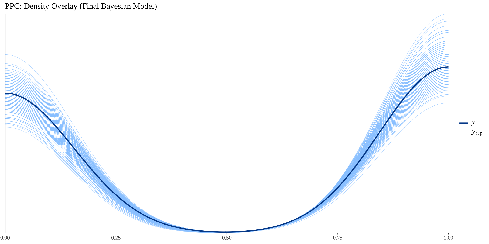

Growing in the Margins of Men’s Narration
How Women Poets Claimed Literary Recognition in Imperial China
1 Introduction
In imperial China, women’s access to cultural prestige and literary achievement was highly constrained by gendered norms, Confucian hierarchy, and limited access to formal institutions. Yet despite these structural restrictions, a number of women poets managed to attain significant literary recognition, even publishing individual poetry collections (bieji/別集) that showcased their unique voices. This study investigates how such success was made possible—not through institutional power, but through social capital embedded in networks of personal relationships, particularly with male elites.
This research explores how social capital functioned as a risk management strategy for women navigating a patriarchal literary world. Without institutional authority or formal professional pathways, women relied on their kinship ties and non-kin social networks to gain visibility, publish their works, and secure cultural legitimacy. This form of network-based agency—sometimes subtle and informal—played a critical role in shaping women’s careers in literature.
This project uses a quantitative approach to test the impact of different forms of social capital on women’s literary recognition. Drawing on the China Biographical Database (CBDB) (Harvard University, Academia Sinica, and Peking University 2024) and Ming Qing Women’s Writings archive (McGill University Library 2024), I construct network measures of kinship and social relations and evaluate their effects through LASSO and double LASSO regression models. The outcome variable is whether a woman poet published her own individual collection, which is taken as an indicator of professional literary recognition.
The findings suggest that non-kin social networks, rather than familial ties, were more influential in determining women’s literary visibility. This result challenges traditional assumptions that family support alone was sufficient, and instead highlights how women strategically engaged in wider social relations—such as academic correspondence, artistic exchange, and political ties—to navigate and overcome the risks of marginalization. Ultimately, this study contributes to the growing literature on gender, networks, and cultural production, while offering new insights into the strategies women used to transform social connection into professional capital in a restrictive historical context.
2 Theoretical Framework
2.3 Gendered Networks in Historical China
Historical studies provide additional insight into gendered social capital in China. Ko highlights how educated women in the Ming-Qing era formed learning communities and literary circles within elite households (Ko 1994). Mann reveals that women leveraged marriage alliances and cross-family connections to construct female-centered intellectual spaces (Mann 1997). Other scholars, such as Wu, Robertson, and Fong, document the vibrant female poetic and artistic networks that emerged in urban centers like Suzhou and Hangzhou, despite gendered spatial constraints (Wu 2003; Robertson 1992; Fong 2004).
Beyond the literary sphere, demographic and economic histories of China also reveal the deep-rooted influence of kinship networks in shaping individual life chances. Campbell and Lee’s study of Liaoning during the Qing Dynasty (1749–1909) demonstrates that household structure and kinship composition were critical to survival and social mobility, underscoring the structural importance of family-based social capital in everyday life (Campbell and Lee 2000). Similarly, Zelin’s examination of Zigong salt merchants from the late Ming to Republican period shows how family networks sustained intergenerational business success through the strategic transmission of capital and trust, highlighting the institutional role of kinship in traditional economic networks (Zelin 2005). Deng and Treiman further illustrate how lineage organizations in the late Qing to early Republican era served as powerful conduits for educational attainment and career advancement, particularly in male-dominated spheres such as the imperial examination and bureaucracy (Deng and Treiman 2008).
Taken together, these studies emphasize that kinship ties were not only familial but also institutionalized mechanisms of social reproduction. However, in contrast to these male-centered patterns, the findings of this research suggest that for women—especially in cultural fields like literature—non-kin social capital may have provided more flexible and effective pathways for public recognition. This gendered divergence in network utility provides an important perspective on how women navigated societal constraints through alternative social strategies.
2.4 Research Gap and Analytical Approach
Nevertheless, prior research has faced two key limitations: (1) the difficulty of quantifying social capital in historical contexts, and (2) the challenge of separating familial influence from broader social ties. This study addresses these gaps by leveraging two digital databases—the China Biographical Database (CBDB) and Ming Qing Women’s Writings (MQWW)—to build large-scale social networks and quantify their effects on women’s literary recognition. Using a three-step regression model including LASSO and double LASSO, this study provides robust empirical evidence that non-kin social relations, rather than kinship ties, were the more critical drivers of women’s success in achieving literary prominence.
In sum, social capital theory offers a powerful framework for analyzing how women in patriarchal societies navigated structural limitations. It reveals how non-inherited, strategically cultivated social ties served as essential vehicles for women to access cultural capital, gain recognition, and establish a legacy in the male-dominated literary sphere of imperial China.
3 Data and Variables
This study uses two main historical databases to analyze how social networks affected women poets’ literary recognition in ancient China. The China Biographical Database (CBDB) provides detailed information on over 640,000 individuals from the 7th to 19th centuries, including their social connections, official positions, and family background (Harvard University, Academia Sinica, and Peking University 2024). Ming Qing Women’s Writing (MQWW) database contains poetry and other writings by women from the late imperial to modern period.
These two datasets were linked to identify women poets and explore their connections with male elites. SQL queries were used to clean and extract key information such as social ties and publication records. Together, the data offer a rich foundation for analyzing the role of social capital in shaping women’s access to literary recognition.
3.1 Response: Women’s Literary Recognition
My response variable to measure women’s literary recognition is whether women poets have published their own individual collections (Bieji/別集). Anthologies (Zongji/總集, including all of other worktypes) typically include works that are representative or influential, but they do not fully reflect the complete body of work and value of an individual author. In contrast, individual collections better showcase the personal creative characteristics and literary styles of a specific writer, and can better demonstrate their unique literary achievements.
Compared to anthologies, which tend to reflect the mainstream evaluation standards of the literary community at the time and are often biased towards male perspectives, the curation of individual collections is more likely to focus on the personal writings of women authors, highlighting their unique perspectives and modes of expression. This makes individual collections more conducive to the objective assessment of the status of women’s literary works.
Therefore, if a woman poet has published at least one individual collection (Bieji > 0), I will conclude that her literary status has been recognized.
\[ Y = I (Bieji > 0) \]
Where:
- \(Y\) represents the response variable of women’s literary recognition
- \(I\) is the indicator function, which takes the value of 1 if the condition \(Bieji > 0\) is true, and 0 otherwise.
The plot (Figure 1) on the right illustrates that while most women poets have published anthologies, only 27% have produced individual collections, highlighting a significant disparity in literary recognition.
The analytical framework of this study is as follows (Figure 2). The primary predictor is social capital, which is divided into two components: kinship and social relations. Kinship focuses on social capital based on blood relations, while social relations focus on non-kinship and non-inherited social capital. In addition to these primary predictors, the study will also control for other major variables that may potentially influence the outcome variable (women’s literary recognition). The measurement approaches for these other variables will be detailed in the subsequent sections.

4 Methodology and Analysis
4.1 Lasso Regression
Given the high-dimensional nature of the data (n = 443, p = 1391), a LASSO model was applied in this study. As the formula illustrates, the lasso imposes a penalty on the absolute size of the coefficients, encouraging sparsity in the model. This penalty helps to mitigate overfitting by selecting a subset of relevant features while effectively shrinking the coefficients of less important predictors to zero. The optimal lambda value was selected through cross-validation based on the AICc criterion.
\[ \hat{\beta}_{\text{LASSO}} = \underset{\beta}{\operatorname{argmin}} \left\{ \sum_{i=1}^{n} (y_i - X_i\beta)^2 + \lambda \sum_{j=1}^{p} |\beta_j| \right\} \]
4.1.1 Centrality Effects in Networks
To measure the centrality effects in networks on women poets, centrality degree metrics were calculated and applied to the model. The measurement of individual relationships may contain more noise; thus, degree serves as an aggregated indicator that can help smooth out these measurement errors to some extent. The existence of effects from aggregated indicators suggests that the network exhibits “wholeness” or “scale effects,” indicating the implications of these aggregated relationships.
Kinship Degree (0.102): This predictor demonstrates a positive but relatively modest influence on women’s literary recognition compared to social relations, which is notably different from the results of the initial model. The coefficient means when kinship degree of women poets increase 1 unit, holding all other variables constant, the odds ratio of their literary status can be recognised will increase by 10.7% (OR = 1.107).
Social Degree (0.223): The coefficient for social degree is higher than that of kinship. This implies that broader social interactions have a more pronounced effect on women’s literary achievements, thereby enhancing their recognition within the literary community. The coefficient indicates that when social degree increases by 1 unit, the Odds Ratio of women poets being literary recognized will increase by 25% (OR = 1.25).

4.1.2 Identification of Causal Effects
Due to potential correlations among different predictors, it is difficult to assert that the estimated coefficients from the above LASSO model—Kinship Degree (0.102) and Social Degree (0.223)—reflect their true impact on women’s literary status recognition. To obtain a more accurate treatment effect of the social capital degree indicator, I will conduct a double LASSO analysis.
Our empirical strategy employs a Double LASSO procedure that unfolds in two stages. In the first stage, I estimate the treatment equation:
\[ d_i = \gamma'Z_i + v_i \] \[ \hat{d}_i = \hat{\gamma}'Z_i \]
where \(d_i\) denotes the treatment variable (the network degree centrality), \(Z_i\) is a vector of control variables, and \(\gamma\) is estimated using LASSO regression. The predicted values \(\hat{d}_i\) are then obtained using the estimated coefficients.
In the second stage, I estimate the outcome equation:
\[ y_i = \beta d_i + \delta\hat{d}_i + \theta'Z_i + \epsilon_i \]
where \(\beta\) captures the treatment effect of network centrality on the outcome variable, while controlling for both the original treatment \(d_i\) and its prediction \(\hat{d}_i\) from the first stage. The control variables \(Z_i\) are included in both stages, and the treatment variables are left unpenalized in the second stage estimation.
I conducted double LASSO analysis separately for the kinship degree and social degree indicators. Table 3.1 presents the estimation results of the double LASSO regression. The effect of social degree is 0.211, which is quite close to the naive LASSO result of 0.223, while the effect of kinship degree is nearly 0 (significantly lower than the naive LASSO estimate of 0.102). This indicates that the influence of kinship degree can be fully explained by social degree and other predictors.
| Network Type | Naive LASSO | Double LASSO |
|---|---|---|
| Social Degree | 0.223 | 0.211 |
| Kinship Degree | 0.102 | 0.000 |
| Note: | ||
| Estimates from LASSO regressions using gamlr package. | ||
| 1 Treatment variables (d and dhat) were not penalized in the estimation. | ||
| 2 Controls include dynasty, region, and status variables. |
To validate these findings, I conducted a bootstrap analysis with 500 replications ?@fig-double-2 . The results indicate that the effect of social connections is statistically significant, with an estimated coefficient of 0.287 (95% CI: [0.086, 0.489]). In contrast, the effect of kinship connections remains statistically insignificant, with an estimate of 0.092 (95% CI: [-0.096, 0.280]). The coefficient from the double LASSO analysis suggests that when the social degree of women poets increases by 1 unit, holding all other variables constant, the odds ratio for their literary recognition increases by 24.9% (OR = 1.249). Conversely, the coefficient for kinship degree does not show significant influence on women’s literary recognition. These bootstrap results further support our main findings that social connections, rather than kinship ties, play a more crucial role in determining career success.
| Network Type | Estimate | Std. Error | 95% CI |
|---|---|---|---|
| Social Degree | 0.287 | 0.103 | [0.086, 0.489] |
| Kinship Degree | 0.092 | 0.096 | [-0.096, 0.280] |
| Note: | |||
| Based on 500 bootstrap replications | |||
| 1 Parallel processing using all available cores | |||
| 2 Bootstrap samples with replacement |
4.2 From a Bayesian Perspective
The prior LASSO and Double‑LASSO analyses highlighted social_degree and kinship_degree as key predictors of women’s literary recognition, but they produce only point estimates with asymptotic confidence intervals and can complicate uncertainty assessment after variable selection.
To address this, we employ a Bayesian hierarchical logistic model that retains those two variables as fixed effects and introduces dynasty as a random intercept, allowing baseline publication odds to vary by historical period. Weakly informative priors ensure the data drive inference, and MCMC yields full posterior distributions for every parameter—enabling direct probability statements about effect sizes and a principled quantification of both within‑ and between‑dynasty uncertainty.
4.2.1 Bayesian Model Specification
Because Bayesian analysis incorporates prior distributions and its parameter estimation logic differs from that of frequentist methods, I briefly summarize our Bayesian specification here.
The likelihood for the observed data \(\mathbf{y} = (y_1, \dots, y_N)\) (where \(y_i\) is the binary outcome is_bieji for individual \(i\)) given the parameters \(\boldsymbol{\theta}\) is:
\[ p(\mathbf{y} \mid \boldsymbol{\theta}) = \prod_{i=1}^N \text{Bernoulli}(y_i \mid p_i) \]
where the probability \(p_i\) is modeled via the logit link:
\[ \text{logit}(p_i) = \beta_0 + \sum_{k=1}^{4} \beta_k x_{ik} + u_{d(i)} \]
Here, \(x_{i1}\) represents the (standardized) kinship_degree for individual \(i\), \(x_{i2}\) represents the (standardized) social_degree for individual \(i\), and d(i) is the index of the dynasty to which individual i belongs.
The set of parameters to be estimated is \(\boldsymbol{\theta} = (\boldsymbol{\beta}, \boldsymbol{u}, \sigma_{u})\), where:
- \(\boldsymbol{\beta} = (\beta_0, \beta_1, \beta_2)\) is the vector of fixed effect coefficients (intercept, coefficient for kinship_degree, and coefficient for social_degree).
- \(\boldsymbol{u} = (u_1, \dots, u_J)\) is the vector of random intercepts for the \(J\) dynasty groups.
- \(\sigma_{u}\) is the standard deviation of these dynasty-specific random intercepts.
The prior distributions \(\pi\) for fixed effects coefficients:
\[ \pi(\beta_k) = \mathrm{N}(\beta_k \mid 0, 10^2), \quad \text{for } k=0, \dots, 4. \]
For random intercepts (hierarchical prior):
\[ \pi(u_j \mid \sigma_{u}) = \mathrm{N}(u_j \mid 0, \sigma_{u}^2), \quad \text{for } j=1, \dots, J. \]
For the standard deviation of random intercepts (hyperprior):
\[ \pi(\sigma_{u}) = \mathrm{Uniform}(\sigma_{u} \mid 0, 10) \]
This reflects a Uniform distribution for \(\sigma_{u}\) between 0 and 10, corresponding to dunif(0, 10) in JAGS.
The joint posterior distribution for the parameters \(\boldsymbol{\theta}\) given the data \(\mathbf{y}\) is:
\[ p(\boldsymbol{\theta} \mid \mathbf{y}) \propto p(\mathbf{y} \mid \boldsymbol{\theta}) \, \pi(\boldsymbol{\beta}) \, \pi(\boldsymbol{u} \mid \sigma_{u}) \, \pi(\sigma_{u}) \]
where \(\pi(\boldsymbol{\beta}) = \prod_{k=0}^4 \pi(\beta_k)\) and \(\pi(\boldsymbol{u} \mid \sigma_{u}) = \prod_{j=1}^J \pi(u_j \mid \sigma_{u})\).
Our goal is to characterize the posterior distributions of the fixed effect coefficients \(\beta_k\), the group level intercepts \(u_J\), and the hyperparameter \(\sigma_{u}\).
4.2.2 Computational Approach and Results
The Bayesian hierarchical logistic regression model was fitted using rjags in R. The Markov Chain Monte Carlo (MCMC) simulation involved running three parallel chains. Each chain consisted of an adaptation phase of 5,000 iterations, followed by a burn-in period of 5,000 iterations which were discarded. Subsequently, 10,000 iterations were drawn for each chain, with a thinning interval of 10, resulting in a total of 3×(10000/10)=3000 effective posterior samples for analysis. Convergence of the MCMC chains was assessed to ensure the reliability of the posterior estimates.
Figure 5 displays the trace plots for the key parameters in the model: the intercept (beta0), the coefficients for standardized kinship degree (beta_kinship_degree) and social degree (beta_social_degree), and the standard deviation of the dynasty-level random intercepts (sigma_dynasty). These plots show the MCMC sampler’s path for each parameter across iterations for the different chains (distinguished by color). The trace plots indicate good mixing of the chains for beta_kinship_degree, beta_social_degree, and sigma_dynasty, suggesting that the samplers have converged to a stable posterior distribution for these parameters.

The following table presents the posterior summary statistics for the main parameters of interest, including their posterior mean, median, and 95% credible intervals (CI). Figure 6 visually represents these posterior distributions.
Table 2: ?(caption)
| Parameter | Mean | Median | 95% CI |
|---|---|---|---|
| beta0 | -3.488 | -2.881 | [-11.612, 1.643] |
| beta_kinship_degree | 0.226 | 0.222 | [-0.084, 0.561] |
| beta_social_degree | 0.724 | 0.717 | [0.296, 1.203] |
| sigma_dynasty | 6.493 | 6.608 | [2.417, 9.819] |
| Note: | |||
| Summaries based on posterior samples from MCMC. | |||
| 1 95% CI = 2.5th–97.5th percentile of the posterior. |
The posterior distribution for the intercept (beta0) has a mean of -3.488 and a 95% CI of [-11.612, 1.643]. This interval is wide and includes zero, suggesting considerable uncertainty about the baseline log-odds of publishing an individual collection when all predictors are at their mean (or zero for standardized predictors) and the random effect is zero.
For the coefficient for Kinship Degree, the posterior mean is 0.226 with a 95% CI of [-0.084, 0.561]. The density plot for this parameter shows a distribution centered to the right of zero, with most of its mass in the positive range. However, since the 95% credible interval includes zero, we cannot conclude with high certainty that kinship degree has a non-zero effect. The probability that kinship degree has a positive effect is substantial, but there is still a non-negligible probability of a null or slightly negative effect.
The coefficient for Social Degree has a posterior mean of 0.724 and a 95% CI of [0.296, 1.203]. This credible interval is entirely above zero. The corresponding density plot is clearly shifted to the right of zero, with almost all its probability mass in the positive region. This provides strong evidence that a higher social degree is positively associated with an increased log-odds (and thus probability) of a woman poet publishing an individual collection, holding other factors constant. The effect size is also notably larger than that of kinship degree.
The right panel of Figure 6 displays the posterior distribution for sigma_dynasty, which represents the standard deviation of the random intercepts across different dynasties. The posterior mean for sigma_dynasty is 6.493, with a 95% CI of [2.417, 9.819]. This distribution is entirely concentrated on positive values, and the credible interval is well clear of zero. This indicates that there is substantial and credibly non-zero variability in the baseline log-odds of publishing an individual collection across different dynastic periods. The magnitude of sigma_dynasty suggests that the dynastic context plays a significant role in explaining differences in literary recognition among women poets, beyond the effects of their individual social capital.

Figure 7 visualizes the posterior means and the 50% (thicker lines) and 95% (thinner lines) credible intervals for the random intercepts (\(u_{dynasty}\)) for each dynasty. These intercepts represent the deviation of each dynasty’s baseline log-odds of literary recognition from the overall intercept (\(\beta_0\)). The vertical dashed line at zero represents the overall average baseline.
Dynasties whose credible intervals do not overlap with zero can be considered to have a baseline literary recognition rate for women poets that is credibly different from the overall average (after accounting for fixed effects). For instance, the “Qing” dynasty shows a posterior mean clearly above zero, with its 95% CI also likely above zero, suggesting a higher baseline probability of recognition during this period compared to the average. Conversely, dynasties like “Eastern Han” or “Eastern Jin” appear to have random intercepts with CIs that might overlap zero or be centered below it, indicating potentially lower or average baseline recognition rates. The “UnknownOrReference” and “unknown” categories show considerable uncertainty with wide credible intervals, as expected. This plot effectively illustrates the heterogeneity in literary recognition opportunities across different historical periods.

Figure 8 presents a posterior predictive check (PPC) for the final Bayesian model. PPCs are a method to assess how well a fitted Bayesian model captures the characteristics of the observed data. This is done by generating replicated datasets (\(y_{prep}\)) from the model’s posterior predictive distribution and comparing them to the actual observed dataset (y).
The plot shows an overlay of the density of the observed data (y, the dark solid line) and the densities of multiple replicated datasets (y_rep, the many light translucent lines) generated from the model. For a binary outcome like is_bieji, the “density” will essentially show the proportion of 0s and 1s. If the model fits the data well, the distribution of y should look similar to the distributions of y_rep; that is, the dark line should be well-covered and typical of the light lines. The presented overlay in Figure 8 demonstrates a strong alignment between the observed data distribution and the simulated responses from the model. This indicates that the model is capable of generating data that closely resembles the real-world outcomes in terms of the overall proportion of women poets who published individual collections, suggesting a good model fit to the data’s fundamental structure.

5 Discussion
5.1 Summary of Empirical Findings
To estimate the effect of female-male social capital on the literary recognition of women poets, this research implemented a three-step approach.
First, a comprehensive network comprising numerous male individuals was analyzed using a LASSO model while controlling for other predictors. The results indicate in measuring the network centrality effect, aggregated metrics, specifically the network degree, were utilized in the LASSO model instead of individual metrics. This analysis yielded a contrasting result; the centrality of social relation networks exhibited a greater influence on kinship network centrality (social 0.223 > kinship 0.102). When to eliminate the mutual impact of each variable and isolate the pure effect of social capital, a double LASSO model was deployed. The bootstrapping results demonstrated that social relation network centrality has a significantly positive impact on the literary recognition of women poets (social 0.287, OR = 1.249), whereas the effect of kinship network centrality proved to be non-significant. This suggests that only social relation networks influence the literary recognition of women poets.
Complementing these findings, a Bayesian hierarchical logistic regression was conducted. This Bayesian analysis provided a more nuanced understanding of parameter uncertainty. The posterior mean for the standardized Social Degree coefficient was 0.724 (95% CI: [0.296, 1.203]), which robustly excludes zero. This translates to an odds ratio of approximately exp(0.724)≈2.06, indicating that a one standard deviation increase in social degree is associated with a doubling of the odds of a woman poet publishing an individual collection. In contrast, the posterior mean for Kinship Degree was 0.226 (95% CI: [-0.084, 0.561]), which includes zero. While the posterior distribution for kinship degree leaned positive, the evidence for a non-zero effect was not conclusive.
The Bayesian approach, by providing full posterior distributions, not only reinforces the primary finding from the double LASSO regarding the superior importance of social degree but also offers a direct quantification of the uncertainty surrounding these effects. The consistency of the substantive conclusion across these different analytical methodologies strengthens the assertion that non-kin social connections were paramount for women poets’ literary success. Furthermore, the Bayesian model estimated a significant standard deviation for the dynasty-level random intercepts (sigma_dynasty mean: 6.493, 95% CI: [2.417, 9.819]), underscoring substantial historical variation in the baseline opportunities for literary recognition.
References
Banerjee, Abhijit, Arun G. Chandrasekhar, Esther Duflo, and Matthew O. Jackson. 2013. “The Diffusion of Microfinance.” Science 341 (6144): 1236498.
Belloni, Alexandre, Victor Chernozhukov, and Christian Hansen. 2014. “Inference on Treatment Effects After Selection Among High-Dimensional Controls.” Review of Economic Studies 81 (2): 608–50.
Bian, Yanjie. 1997. “Bringing Strong Ties Back in: Indirect Ties, Network Bridges, and Job Searches in China.” American Sociological Review 62 (3): 366–85.
Bourdieu, Pierre. 1986. “The Forms of Capital.” In Handbook of Theory and Research for the Sociology of Education, edited by J. G. Richardson, 241–58. New York: Greenwood Press.
Burt, Ronald S. 1992. Structural Holes: The Social Structure of Competition. Cambridge, MA: Harvard University Press.
Campbell, Cameron D., and James Z. Lee. 2000. “State Views and Local Views of Population: Linking and Comparing Genealogies and Household Registers in Liaoning, 1749–1909.” History and Computing 12 (1): 51–76.
Chatterjee, Arindam, and Snigdhansu N. Lahiri. 2011. “Bootstrapping Lasso Estimators.” Journal of the American Statistical Association 106 (494): 608–25.
Deng, Zhong, and Donald J. Treiman. 2008. “The Impact of the Cultural Revolution on Trends in Educational Attainment in the People’s Republic of China.” American Journal of Sociology 114 (2): 391–428.
Fong, Grace S. 2004. “Female Hands: Embroidery as a Knowledge Field in Women’s Everyday Life in Late Imperial and Early Republican China.” Late Imperial China 25 (1): 1–58.
Granovetter, Mark S. 1973. “The Strength of Weak Ties.” American Journal of Sociology 78 (6): 1360–80.
Harvard University, Academia Sinica, and Peking University. 2024. “China Biographical Database (CBDB).” https://projects.iq.harvard.edu/cbdb.
Knight, Keith, and Wenjiang J. Fu. 2000. “Asymptotics for Lasso-Type Estimators.” Annals of Statistics 28 (5): 1356–78.
Ko, Dorothy. 1994. Teachers of the Inner Chambers: Women and Culture in Seventeenth-Century China. Stanford, CA: Stanford University Press.
Li, Bin, Yiguo Yuan, Xuehui Lu, and Peter K Bol. 2024. “Normalization of Kinship Relations to Enrich Family Network Analysis: Case Study on China Biographical Database.” Digital Scholarship in the Humanities 39 (1): 215–27.
Liu, Hui, Xiaoyan Xu, and Jiajia Li. 2020. “A Bootstrap Lasso+ Partial Ridge Method to Construct Confidence Intervals for Parameters in High-Dimensional Sparse Linear Models.” Statistica Sinica 30 (3): 1333–55.
Mann, Susan. 1997. Precious Records: Women in China’s Long Eighteenth Century. Stanford, CA: Stanford University Press.
Mazanec, Thomas J. 2018. “Networks of Exchange Poetry in Late Medieval China: Notes Toward a Dynamic History of Tang Literature.” Journal of Chinese Literature and Culture 5 (2): 322–59.
McGill University Library. 2024. “Ming Qing Women’s Writings.” https://digital.library.mcgill.ca/mingqing/english/index.php.
Robertson, Maureen. 1992. “The Art of Letter-Writing: An Essay on the Handscrolls of Ming and Ch’ing Women.” Late Imperial China 13 (1): 1–50.
University, Harvard. 2024. “China Biographical Database (CBDB).”
Wong, S. 2011. Kinship, Business and Elite Formation in Chinese History. Cambridge: Cambridge University Press.
Wu, Pei-yi. 2003. The Confucian’s Progress: Autobiographical Writing in Traditional China. Princeton, NJ: Princeton University Press.
Yan, Chengxi, and Jun Wang. 2018. “Digital Humanistic Perspective: A Study on the Visualization of Political Network in Song Dynasty Based on Symbolic Analysis.” Journal of Library Science in China 44 (5): 87–103.
Zelin, Madeleine. 2005. The Merchants of Zigong: Industrial Entrepreneurship in Early Modern China. New York: Columbia University Press.
2.2 Social Capital in the Chinese Context
In the Chinese context, Lin argues that access to social resources is embedded in hierarchical structures, and that an individual’s position within these networks significantly affects their opportunity structures (Lin 2001). Bian’s research adds a culturally specific perspective, showing that in Chinese society, strong ties and direct personal connections—or guanxi—were often more influential than weak ties, especially in resource acquisition and career advancement (Bian 1997).